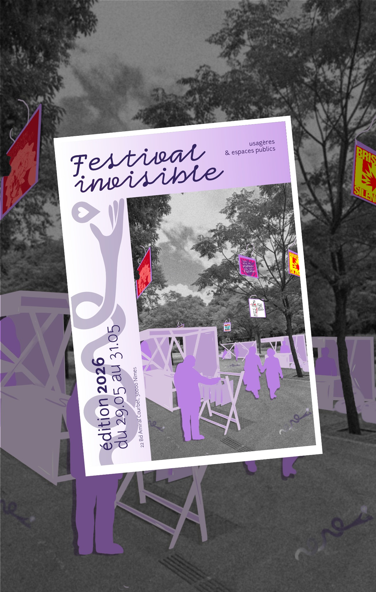
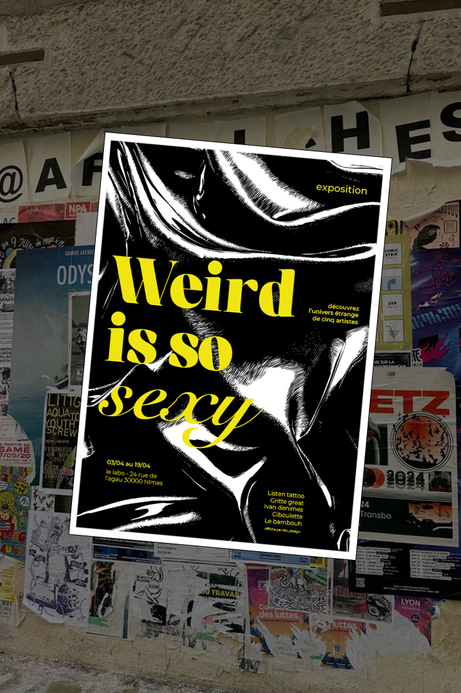
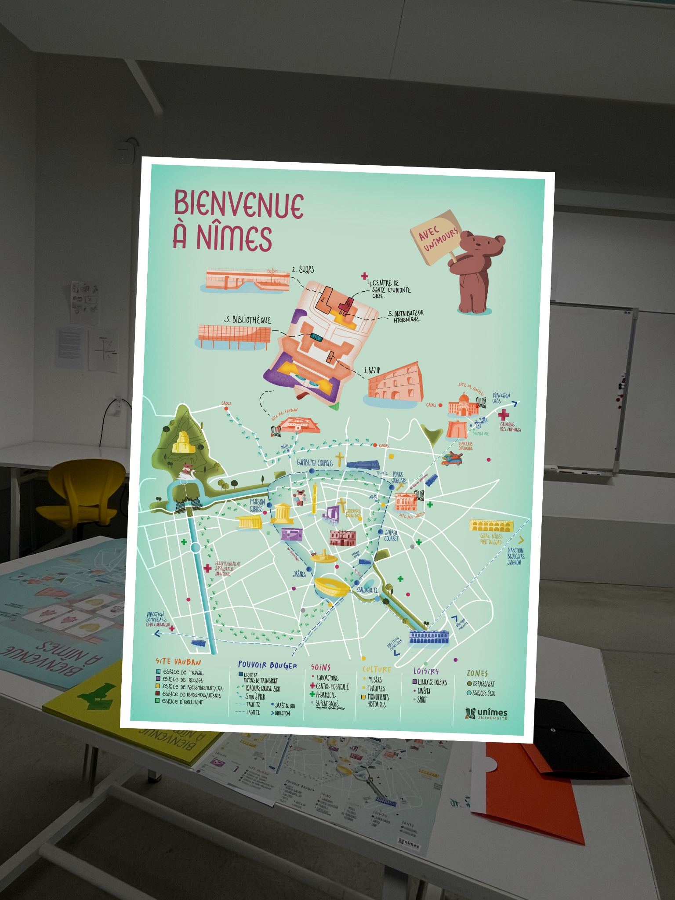

Festival Invisible
Un festival et des outils graphiques pour réhabiliter l’espace public et rendre la rue plus sûre pour les femmes.
Designeuse engagée, je puise ma curiosité et ma créativité dans les liens sociaux.
J’aime faire avancer mes projets grâce à des stratégies claires et organisées.
À découvrir

Un festival et des outils graphiques pour réhabiliter l’espace public et rendre la rue plus sûre pour les femmes.

Trois directions graphiques pour créer une affiche d’exposition qui accroche le regard et explore le bizarre.

Repenser les goodies universitaires avec une cartographie et des supports graphiques utiles au quotidien.